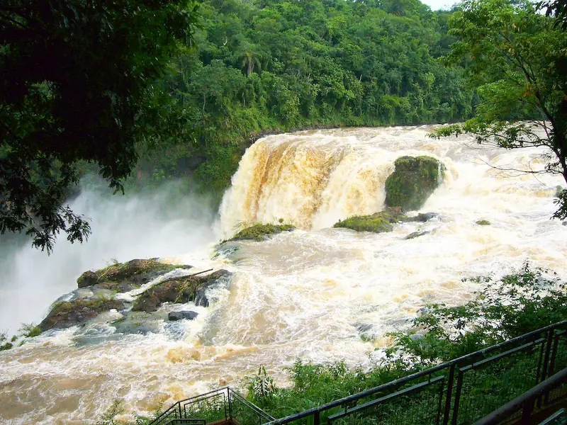

Presidente Franco is a city in Paraguay, my home country, that has a special place in my heart for it was my last area during my mission. But it's my favorite city for a lot of reasons, such as being very close to Ciudad del Este, a very commercial city, but far enough to consider Presidente Franco a calm place since it's not so crowded, and it also has many places one could visit on a regular basis and enjoy the sight.

In the image we can see the Monday Falls, one of the interesting things one could see while at Presidente Franco. But it is important to highlight that, although the Monday Falls is quite a sight, the Monday river crosses Franco and it's fairly easy to go and see it from different spots across the city.